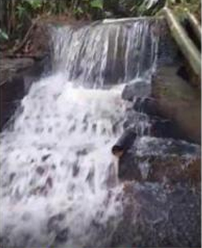
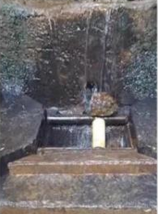
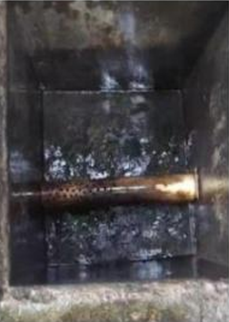
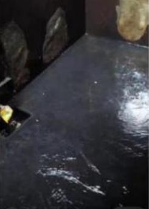
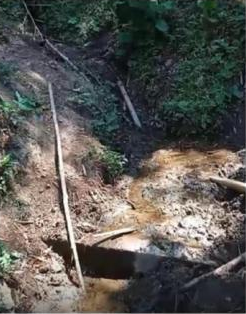
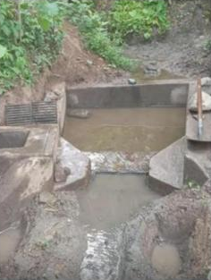
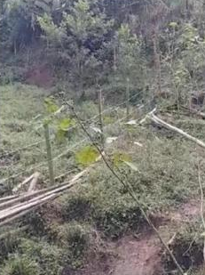

ASOCIACIÓN DE USUARIOS DE SERVICIOS COLECTIVOS LA CHINA
Objeto Social Y Actividades
Como lo expresa el Decreto 2811 de 1974 o el Código Nacional de los Recursos Naturales Renovables y del Ambiente, su principal objetivo lo constituye la defensa del ambiente, mediante el aprovechamiento, uso y manejo de los recursos naturales renovables y del ambiente para el mejor desarrollo de los habitantes de su área de influencia, pero centrando su esfuerzo en el aprovechamiento del agua como elemento vital para el desarrollo de la comunidad del área de influencia.
El logro de los objetivos de la Asociación se cumplirá a través de las siguientes actividades, para lo cual podrá celebrar programas, convenios y contratos necesarios o convenientes para el desarrollo de sus objetivos o que de una u otra forma se relacionen con estos, siempre con estricta sujeción a la ley y a los presentes estatutos:
- Administrar correctamente el Acueducto dentro de las limitaciones y bajo la regulación de la Ley 142 de 1994 y demás disposiciones que le sean aplicables, apoyándose para ello en la asistencia técnica, financiera y administrativa que contratará con el Comité Departamental de Cafeteros de Caldas, quien a su vez podrá delegarlo en una entidad de reconocida capacidad de gestión en este campo.
- Promover la educación ambiental a través de las diferentes formas de comunicación, capacitando y sensibilizando a sus asociados en el conocimiento, conservación y manejo del medio ambiente y, en especial, del recurso hídrico, para que sirvan de multiplicadores a la comunidad en general.
- Promover actividades forestales de protección y aprovechamiento de cuencas y microcuencas en el área de influencia que garanticen el suministro de agua a los habitantes del área de influencia de la asociación, así como, en general, la defensa y/o restauración de los recursos naturales.
- Promover las obras de descontaminación con la implementación de sistemas sépticos en viviendas ubicadas aguas arriba y abajo de la(s) bocatoma(s) y plantas de tratamiento de aguas servidas en establecimientos comunitarios como colegios, escuelas, puestos de salud, salones comunitarios, etc., con el fin de garantizar agua de calidad para sus usuarios.
- Suministrar insumos y materias primas para las actividades de los asociados, pero únicamente en aquellos aspectos de conservación y protección de microcuencas que garanticen el suministro de agua a la comunidad del área de influencia de la asociación y, en general, la preservación del ecosistema presente.
- Coordinar con las diferentes entidades, tanto públicas como privadas, la eficiente aplicación de las normas y reglamentos sobre el manejo ambiental y protección de aguas.
- Participar en la elaboración y ejecución de los planes de desarrollo, tanto municipales como regionales y nacionales, buscando que se incluyan en los mismos aspectos de manejo ambiental para el área de influencia de la asociación.
- Celebrar convenios y/o contratos con entidades públicas y privadas sobre actividades que involucren el medio ambiente, pero siempre dentro de su objeto social y área de cobertura tanto geográfica como poblacional.
- Realizar interposición de diferentes acciones populares de acuerdo a la necesidad sentida en el radio de acción de la asociación, en la medida en que se requiera para la defensa de los intereses de la asociación y su objeto social.
- Denunciar los delitos que contra el ambiente y los recursos naturales se cometan en el área de influencia de la asociación, en especial los que atenten contra la conservación de las microcuencas y la calidad del agua.
- Adelantar campañas tendientes a educar a los habitantes del área de influencia de la asociación en aspectos relacionados con la defensa y conocimiento del medio ambiente, en particular del agua como elemento primordial de vida.
- Adelantar jornadas en las cuales se desarrollen acciones para mejorar el ambiente, como siembra de árboles, recolección de basuras, extinción de incendios y otros que surjan de acuerdo con las condiciones del área de influencia de la asociación, todo dentro de un plan integral de manejo del agua.
- Proponer a la Corporación Autónoma Regional de Caldas (CORPOCALDAS), como representante del Ministerio del Medio Ambiente o la entidad correspondiente, la delimitación de zonas de protección tanto de nacimientos, bocatomas, tanques de abastecimiento, tanques desarenadores, como de los cauces de fuentes de agua que forman parte del acueducto. De igual manera, las zonas de reservas forestales protectoras y parques naturales como instrumento de protección del medio ambiente y del agua en particular.
- Velar por la utilización, conservación, protección y buen uso de los recursos naturales de los habitantes del área de influencia de la Asociación.
- Velar por la eficiente prestación del servicio del Acueducto, como servicio público que es, con el propósito de garantizar la prestación del mismo de forma costeable para asegurar su sostenimiento, expansión y pleno desarrollo, y bienestar para toda la comunidad.
- Procurar por la permanente prestación del servicio, que sea costeable para asegurar su sostenimiento, realizar el adecuado mantenimiento, cuidado y conservación de las fuentes de agua que lo abastecen y, en general, prevenir su contaminación para el pleno desarrollo de la comunidad.
- Velar por la conservación de la bocatoma, desarenador, tanque, redes de conducción y, en general, de todas las obras necesarias para su buen funcionamiento.
- Recaudar las tarifas asignadas por la prestación del servicio público y su sostenimiento para un mejor servicio a los usuarios del acueducto.
Actividades 2025

Caudal aumentado por lluvias
La Norcasia

Filtros limpios

Filtros limpios

Interior tanque principal
- Se despejó y recuperó la cuenca La Cartuja.
- Se instaló cerco para que no pasen las vacas a la cuenca.



- Se despejó y recuperó la cuenca La Cartuja.
- Se instaló cerco para que no pasen las vacas a la cuenca.